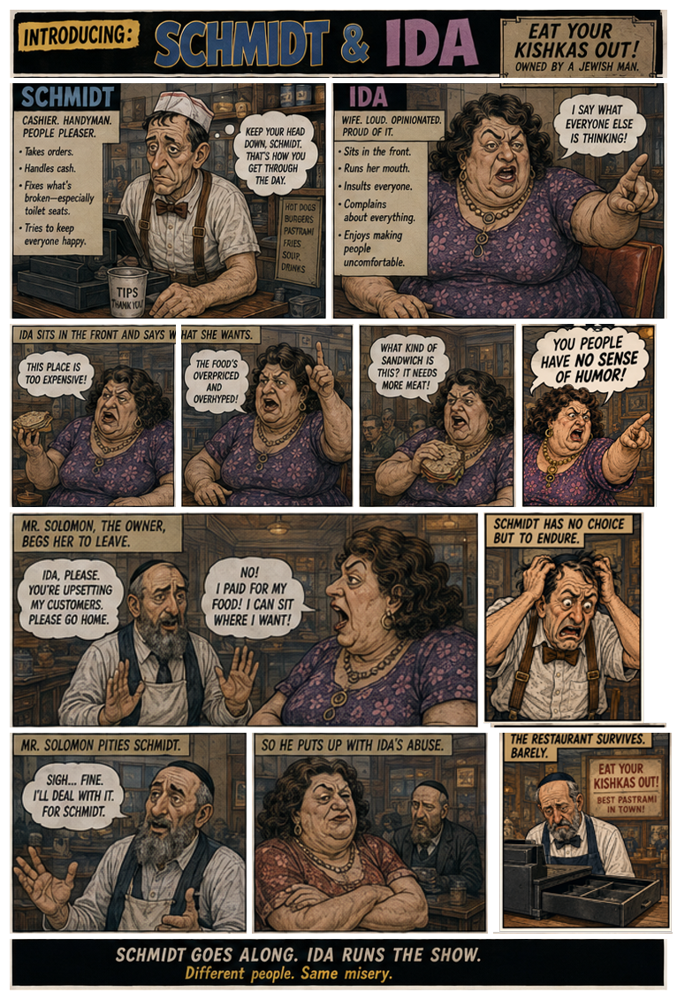
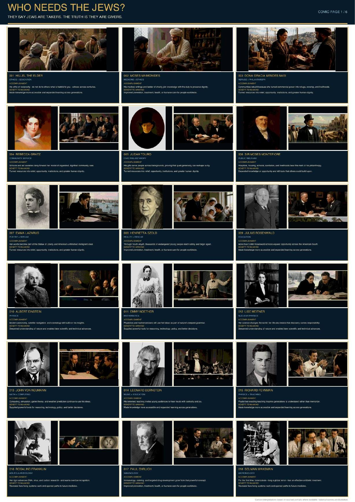

The first permission
A child hears a slur. The adults laugh it away. But the lesson lands: this person is different, suspect, and safe to mock.
A public-awareness comics initiative
Hatred is learned. Storytelling can challenge it—before a slur becomes a stereotype, a stereotype becomes permission, and permission becomes harm.
Original web-comic prologue · separate from the portfolio samples below
Antisemitism does not begin at the moment of attack. It begins earlier—in the stories people repeat, the jokes no one challenges, and the gradual removal of a neighbor’s humanity.
A child hears a slur. The adults laugh it away. But the lesson lands: this person is different, suspect, and safe to mock.
A joke hardens into a stereotype. A stereotype becomes an explanation for everything. Repetition begins to feel like proof.
Once people are reduced to a category, their fear can be ignored and their suffering can be explained away.
A family lowers its voice. A student hides a Jewish symbol. A shopkeeper watches the door. The damage is already real before it reaches the news.
Reports matter. Condemnations matter. But prejudice often survives facts because it entered through identity, emotion, belonging, and fear.
Comics can place a reader inside another person’s life. Education can expose the trick. Satire can puncture the lie. Empathy can restore the human being the stereotype tried to erase.
The Conspiracy Department · approved portfolio samples
Three satirical stories by Andrew Abeles about certainty, online amplification and meaningful accountability. Select any page to read it full-size, then move through the samples in order.


Additional completed work
Additional completed samples from Andrew Abeles’s comics and educational storytelling portfolio.



The storytelling method
Begin with a recognizable person and a consequential choice—not an abstract lecture.
Show how scapegoating, repetition, social rewards and dehumanization make a lie travel.
Let readers feel the private consequences that statistics alone cannot carry.
Pair emotional identification with evidence, context, media literacy and questions that restore independent judgment.
The next stage is a disciplined educational pilot: original graphic narratives, educator-ready discussion material, digital adaptations, and audience feedback that can test what audiences understand and remember.
Foundations, educators, cultural institutions and community partners can help develop, review and distribute stories that make prejudice visible—and make resistance to it personal.